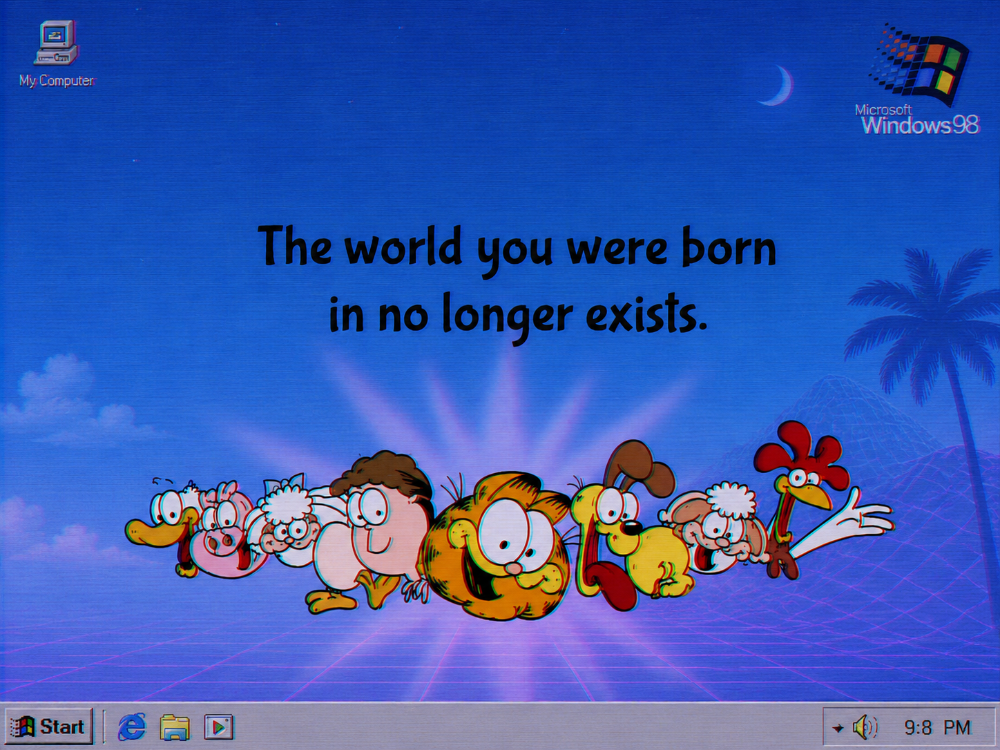

RahulRahul is the name Buddha gave to his son (Also means Silver) ChandChand means "moon" in Sanskrit
राहुल चंद
Hi, I am Rahul. I recently completed my MS CS from Stanford 🌲 . Previously I was an intern at the GEAR Lab at NVIDIA Research training GR00T N1.6 and working on offline RL. . Before that, I was a summer intern at NVIDIA's post-training Nemotron LLM team working on looped transformer, and contributed to Nemo-RL (async RL).
I was also part of the ILIAD group (Prof. Dorsa Sadigh's lab). Prior to Stanford 🌲 I was a Research Fellow at Microsoft Research on Transformer Compression & Extreme Classification. My current interests are in RL+LLM and Robotics.
At Stanford 🌲 I have been a TA for:
- CS 153 — Infra at Scale (Anjey Midha, Michael Abbot)
- CS 234 — Reinforcement Learning (Prof. Emma Brunskill)
- CS 224R — Deep RL (Prof. Chelsea Finn)
In the future I look forward to getting replaced by AGI and work as a Wallace design protein farmer
I look forward to getting replaced by AGI and work as a Wallace design protein farmer .
.
In my previous life (most of which I have forgotten 
Publications
CoRL 2025 Oral · Conference on Robot Learning
NeurIPS 2026 · Evaluations and Datasets Track
ICLR 2024 · International Conference on Learning Representations
Open Source
NVIDIA's open platform for humanoid robot learning — training, fine-tuning, and deploying GR00T foundation models.
Tool to check vRAM & token/s requirement for any LLM for consumer hardware. Supports ggml, HuggingFace, bitsandbytes, QLoRA & gradient checkpointing. Used over 120k+ times by 20k+ users.
Starter tutorial for inference with LLaMA in C.
NeMo RL is NVIDIA's open-source post-training library.
NeMo Gym is a framework for building reinforcement learning environments to train LLMs.
 Stanford
Stanford
 NVIDIA
NVIDIA
 IISc
IISc
 IIRS
IIRS
 BITS Pilani
BITS Pilani